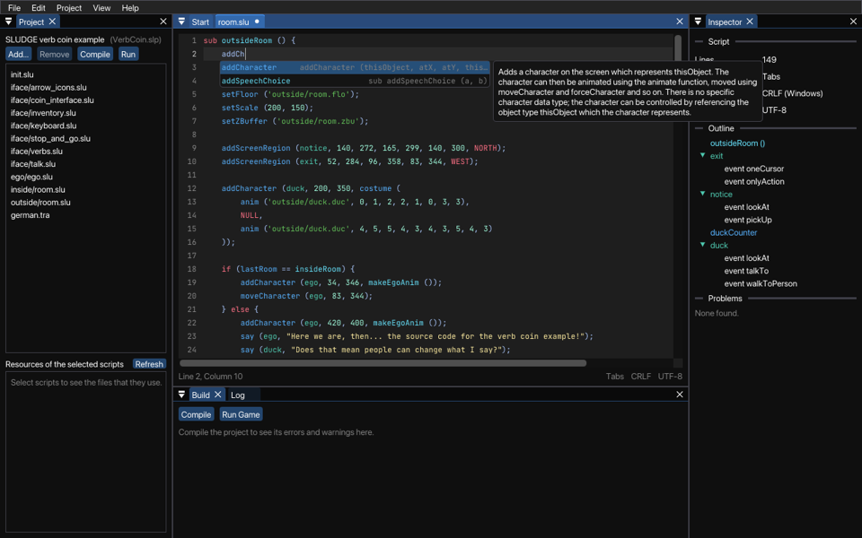

You can write SLUDGE code in any text editor you like... but the Dev Kit has one of its own, and it knows a lot more about SLUDGE than Notepad does. It shows your code in colours, finishes the names of functions for you, tells you what a function does without you having to dig through this help, and spots many mistakes while you type, long before the compiler gets a chance to complain about them.
To open a script (a .slu file) or a file of constants (a .sld file), double-click it in the list of your project's files, or choose Open... from the File menu. To start a new one, choose New from the File menu, and then Script. This is how it looks, with one of the scripts of the verb coin example:

The editor keeps your code tidy as you go. When you press Enter, the new line has the same indent as the one before it, plus one more after a {. Type a } at the start of a line and it jumps back to line up with its {.
Brackets and quotes close themselves: type ( and you get () with the cursor in the middle. When you get to the end and type the ) yourself, the cursor just moves over the one that's already there, so you don't end up with two. If you select some text first, typing a bracket or a quote puts it around the selection instead.
Tab indents the selected lines, and Shift+Tab takes an indent away. The editor indents with tabs, unless most of the lines of the file already use spaces, in which case it uses spaces too. (We're not going to get into which is better. Life's too short.)
Undo (Ctrl+Z, or Command+Z on macOS) takes back a word at a time, rather than a letter at a time.
If you open a file and don't change it, saving it writes back exactly what was there, byte for byte, including its line ends - whether they're Windows ones, Unix ones, or a strange mix of the two. So opening your scripts in the Dev Kit won't make your version control think that every line has changed.
Scripts have to be UTF-8 text. If the Dev Kit finds one that isn't, it tells you on which line the problem is, and Check Files... in the Project menu can convert it for you.
If a script changes on disk while it's open, because you've saved it in another program, the editor loads it again. If you've changed it in the Dev Kit as well, it asks you first, so that nothing gets lost. When you compile, the Dev Kit saves any scripts that you've changed before it starts.
Type the first two letters of a name, or a dot after the name of an objectType, and a list pops up with the names that fit there, and what each of them is. Press Ctrl+Space (Ctrl on macOS too) to see the list at any time.
The names nearest to you come first: the local variables and parameters of the sub you're in, then the members of its objectType, then the subs, objectTypes, variables, flags and constants of your project, and then the built-in functions and constants of SLUDGE. You don't even have to type a name from the start: the letters can match the starts of its parts, so aC finds addCharacter. Use Up and Down to pick one, Tab or Enter to put it in, and Escape to close the list.
The list knows where you are, too. Outside the subs, where all you can do is make a new sub, objectType or variable, it only offers the words for those. Inside an objectType, it offers the things you can set there, such as speechColour and walkSpeed.
Once you're inside the brackets of a call, a line above it shows the parameters of the function, with the one you're typing in yellow, and what the function does. Press Escape to hide it.
Rest the mouse on a name and the editor tells you what it is. For a built-in function, it shows the syntax, what the function does and what it returns, taken from this help. For a name from your project, it says where the name is made, together with any # comment lines just above it. That's a good reason to put a comment above each sub: it then pops up wherever the sub is used.
To jump to where a name is made, even in another script, press F12 or Ctrl+click it (Command+click on macOS). Do that on a built-in function or constant, and you get its page of this help instead. While you're holding Ctrl (or Command), the names that you can jump from are underlined when the mouse is over them, and the pointer turns into a hand, just like a link on a web page. F1 opens the help page of the built-in function at the cursor.
The Inspector, on the right, shows the outline of the script: its subs, and its objectTypes with their members and events. Click one to go straight to it.
While you type, the editor checks the script, and puts a wavy line under anything wrong, with a dot beside the line number. A red one is an error, which the compiler would refuse. A yellow one is a warning: something the compiler would let through, but which probably isn't what you meant, such as calling a function with the wrong number of things in the brackets (which would stop your game when it got there). Rest the mouse on the line to see what's wrong, or look under Problems in the Inspector. F8 goes to the next problem, and Shift+F8 to the one before.
These are the mistakes it spots:
To know which names exist, the editor needs all of your project's scripts. So it only checks names in a script of the project that is open, once it has been able to read all of them.
When you compile, the lines that the compiler had errors or warnings about get a mark too, with what the compiler said, until you change them. Double-click an error in the Build panel to open its script at that line.
Ctrl+F (Command+F on macOS) finds text in the script, with Match case and Whole words if you want them. Enter goes to the next place it's found, Shift+Enter to the one before, and F3 (Command+G on macOS) finds again. Ctrl+H (Command+Alt+F on macOS) replaces too, one at a time, or all of them at once with Replace All, which you can undo in one go. Ctrl+G (Command+L on macOS) goes to a line by its number.
To look through every script of your project at once, choose Find in Project... from the Project menu, or press Ctrl+Shift+F (Command+Shift+F on macOS). It searches the scripts that are open as they are now, changes and all. Click a place in the list to open its script there.
The Room Editor, for drawing the screen regions of a room
SLUDGE Language Reference Manual
Alphabetical List of Built-in Functions
SLUDGE and this SLUDGE documentation are copyright Hungry Software and contributors 2000-2026